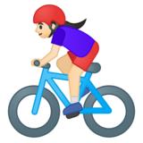

What You'll Learn
In this codelab you'll learn the basic "Hello World" of machine learning where, instead of programming explicit rules in a language such as Java or C++, you'll build a system that is trained on data to infer the rules that determine a relationship between numbers.
Consider the following problem: You're building a system that performs activity recognition for fitness tracking. You might have access to the speed at which a person is moving, and attempt to infer their activity based on this speed using a conditional: 
if speed < 4:
status = WALKING
You could extend this to running with another condition: 
if speed < 4:
status = WALKING
else:
status = RUNNING
In a final condition you could similarly detect cycling: 
if speed < 4:
status = WALKING
else if speed < 12:
status = RUNNING
else
status = BIKING
Now consider what happens when you want to include an activity like golf? Suddenly it's less obvious how to create a rule to determine the activity.
# Now what?? :(
It's extremely difficult to write a program (expressed in code) that will give us the golfing activity. So what do you do? That's where machine learning can be used to solve the problem!
To indicate how long each slide will take to go through, set the Duration under each Heading 2 (i.e. ##) to an integer. The integers refer to minutes. If you set Duration: 4 then a particular slide will take 4 minutes to complete.
The total time will automatically be calculated for you and will be displayed on the codelab once you create it.
To include code snippets you can do a few things.
- Inline highlighting can be done using the tiny tick mark on your keyboard: "`"
- Embedded code
JavaScript
{
key1: "string",
key2: integer,
key3: "string"
}
Java
for (statement 1; statement 2; statement 3) {
// code block to be executed
}
Images
Checkout the official documentation here: Codelab Formatting Guide